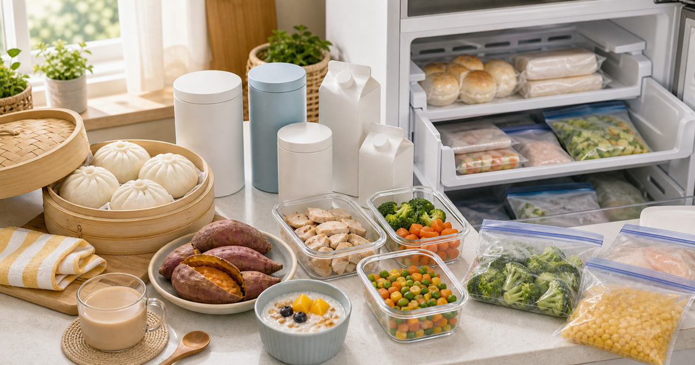

早餐與冷凍麵食補貨：饅頭、地瓜、雞胸與沖泡飲
早餐與冷凍麵食補貨要先看冷凍容量、加熱方式、份量與飲品保存，再比較饅頭、地瓜、雞胸與沖泡飲。

早餐補貨最怕的是以為冰箱會自動解決一切。饅頭、地瓜、雞胸、冷凍蔬菜和沖泡飲都能節省早晨判斷，但前提是冷凍容量、加熱方式、份量和保存期限都先排好。若家裡早上只有十分鐘，商品選擇就要服務速度、清潔與帶出門，而不是服務想像中的完美早餐。
先估平日可用時間
五分鐘、十分鐘和十五分鐘需要的早餐完全不同。
花漾饅頭屋與田食原可放在冷凍麵食和食材情境中比較。
Elite Fashion 編輯團隊的具體判斷是：早餐冷凍補貨先看平日時間、冷凍空間與實際吃完速度，不把補貨寫成飲食管理答案。 這讓 花漾饅頭屋 | 天然手作真食材老麵發酵好味道、田食原-冰烤地瓜 舒肥雞胸肉 冷凍蔬菜 自產自銷 冷凍食品 與其他選項能被放回同一個生活問題裡比較，而不是只看單一商品照片。
下單前仍要回商品頁確認規格、尺寸、材質、活動、庫存與配送；若資訊不足，先暫緩，比把不確定的物品帶回家更成熟。
- 先確認使用位置與拿取頻率。
- 再看保存、清潔、線材或收納條件。
- 最後才比較品牌、活動與預算。
飲品要看保存和咖啡因
沖泡飲、植物奶或低碳食品都要回到成分、保存與飲用時段。
本草養生、KKM、GUMi低碳與 D醣一刻可作為飲品補充。
Elite Fashion 編輯團隊的具體判斷是：早餐冷凍補貨先看平日時間、冷凍空間與實際吃完速度，不把補貨寫成飲食管理答案。 這讓 花漾饅頭屋 | 天然手作真食材老麵發酵好味道、田食原-冰烤地瓜 舒肥雞胸肉 冷凍蔬菜 自產自銷 冷凍食品 與其他選項能被放回同一個生活問題裡比較，而不是只看單一商品照片。
下單前仍要回商品頁確認規格、尺寸、材質、活動、庫存與配送；若資訊不足，先暫緩，比把不確定的物品帶回家更成熟。
- 先確認使用位置與拿取頻率。
- 再看保存、清潔、線材或收納條件。
- 最後才比較品牌、活動與預算。
Elite 嚴選
冷凍抽屜要分格
主食、蛋白質、蔬菜、備用飲品分格，早上才不會翻找。
成分、保存、加熱方式和限制請以商品頁及包裝為準。
Elite Fashion 編輯團隊的具體判斷是：早餐冷凍補貨先看平日時間、冷凍空間與實際吃完速度，不把補貨寫成飲食管理答案。 這讓 花漾饅頭屋 | 天然手作真食材老麵發酵好味道、田食原-冰烤地瓜 舒肥雞胸肉 冷凍蔬菜 自產自銷 冷凍食品 與其他選項能被放回同一個生活問題裡比較，而不是只看單一商品照片。
下單前仍要回商品頁確認規格、尺寸、材質、活動、庫存與配送；若資訊不足，先暫緩，比把不確定的物品帶回家更成熟。
- 先確認使用位置與拿取頻率。
- 再看保存、清潔、線材或收納條件。
- 最後才比較品牌、活動與預算。
常見錯誤：買得像一個月計畫
如果兩週吃不完，就先縮小補貨量。
Elite Fashion 編輯團隊的判斷是：早餐補貨要服務下一週，不是展示意志力。
Elite Fashion 編輯團隊的具體判斷是：早餐冷凍補貨先看平日時間、冷凍空間與實際吃完速度，不把補貨寫成飲食管理答案。 這讓 花漾饅頭屋 | 天然手作真食材老麵發酵好味道、田食原-冰烤地瓜 舒肥雞胸肉 冷凍蔬菜 自產自銷 冷凍食品 與其他選項能被放回同一個生活問題裡比較，而不是只看單一商品照片。
下單前仍要回商品頁確認規格、尺寸、材質、活動、庫存與配送；若資訊不足，先暫緩，比把不確定的物品帶回家更成熟。
- 先確認使用位置與拿取頻率。
- 再看保存、清潔、線材或收納條件。
- 最後才比較品牌、活動與預算。
下單前做七天表
把七個早晨排出主食、飲品和備案，再決定補貨量。
價格、規格、活動、庫存與配送請以下單前商品頁公告為準。
Elite Fashion 編輯團隊的具體判斷是：早餐冷凍補貨先看平日時間、冷凍空間與實際吃完速度，不把補貨寫成飲食管理答案。 這讓 花漾饅頭屋 | 天然手作真食材老麵發酵好味道、田食原-冰烤地瓜 舒肥雞胸肉 冷凍蔬菜 自產自銷 冷凍食品 與其他選項能被放回同一個生活問題裡比較，而不是只看單一商品照片。
下單前仍要回商品頁確認規格、尺寸、材質、活動、庫存與配送；若資訊不足，先暫緩，比把不確定的物品帶回家更成熟。
- 先確認使用位置與拿取頻率。
- 再看保存、清潔、線材或收納條件。
- 最後才比較品牌、活動與預算。
同主題品牌參考
花漾饅頭屋 | 天然手作真食材老麵發酵好味道
早餐補貨、親子點心、冷凍饅頭料理、天然食材故事
瀏覽品牌田食原-冰烤地瓜 舒肥雞胸肉 冷凍蔬菜 自產自銷 冷凍食品
健身餐補貨、舒肥雞胸比較、冰烤地瓜推薦、健康冷凍庫清單
瀏覽品牌本草養生From Nature
養生飲怎麼選、上班族日常補給、長輩送禮清單
瀏覽品牌KKM 健康飲食 專賣-植物奶|果汁|穀物果乾
植物奶怎麼選、早餐健康補給、辦公室零食與果乾清單
瀏覽品牌GUMi低碳
低碳飲食入門、低醣食品比較、健身備餐
瀏覽品牌D醣一刻
低醣點心比較、控糖零食、健身飲食、下午茶替代
瀏覽品牌FAQ
早餐冷凍補貨先買什麼？
先看早晨時間和冷凍容量，再決定主食與飲品。
沖泡飲怎麼放？
看保存方式、咖啡因和使用頻率。
怎麼避免補太多？
用七天表決定，不要用一個月想像決定。
下一步建議
早餐與冷凍麵食補貨要先看冷凍容量、加熱方式、份量與飲品保存，再比較饅頭、地瓜、雞胸與沖泡飲。 先用本文順序縮小範圍，再回商品頁確認規格、價格、活動與庫存。
重要警語
本文含品牌／商品導購連結；商品資訊、價格、規格、活動與庫存請以商品頁公告為準。早餐、冷凍食品、沖泡飲與低碳食品不作身體狀態或飲食結果承諾；成分、保存、加熱、咖啡因與限制請以商品頁及包裝為準。
本文含品牌／商品導購連結；若你透過部分商品連結前往選購，Elite Fashion 可能取得合作收益。本文仍以編輯判斷與使用情境整理為主，價格、規格、活動與庫存請以商品頁公告為準。